Warning: package 'DiagrammeR' was built under R version 4.4.3Basic Statistics with R
Previous workshops
Statistical Analysis using R
Workshop Expectations:
Not a workshop to teach Statistics, participants should be familiar with common stats terms. Click here for stats terms
Basic knowledge of R programming language expected. ( Please make sure you are familiar with the content from the first 4 workshops)
Set up:
Please note if you haven’t installed these packages already use install.packages("NAMEOFPACKAGE")
library(tidyverse)── Attaching core tidyverse packages ──────────────────────── tidyverse 2.0.0 ──
✔ dplyr 1.1.4 ✔ readr 2.1.5
✔ forcats 1.0.0 ✔ stringr 1.5.1
✔ ggplot2 3.5.1 ✔ tibble 3.2.1
✔ lubridate 1.9.4 ✔ tidyr 1.3.1
✔ purrr 1.0.4
── Conflicts ────────────────────────────────────────── tidyverse_conflicts() ──
✖ dplyr::filter() masks stats::filter()
✖ dplyr::lag() masks stats::lag()
ℹ Use the conflicted package (<http://conflicted.r-lib.org/>) to force all conflicts to become errorslibrary(ggplot2)
knitr::opts_chunk$set(fig.width=6, fig.height=5) Dataset used:
Iris data set has 150 observation with 5 variables as columns. It is a great example of a tidy data format. Note that each observation is a row (150) and each variable is a column (5): Sepal.Length; Sepal.Width, Petal.Length, Petal.Width and Species.
Attaching and eploring dataset
data() # Exploring different in build dataset
data("iris") # attaching in build dataset
head(iris) # the first 6 lines of the dataset Sepal.Length Sepal.Width Petal.Length Petal.Width Species
1 5.1 3.5 1.4 0.2 setosa
2 4.9 3.0 1.4 0.2 setosa
3 4.7 3.2 1.3 0.2 setosa
4 4.6 3.1 1.5 0.2 setosa
5 5.0 3.6 1.4 0.2 setosa
6 5.4 3.9 1.7 0.4 setosa# Viewing dataset
View(iris)
# structure of data
str(iris) 'data.frame': 150 obs. of 5 variables:
$ Sepal.Length: num 5.1 4.9 4.7 4.6 5 5.4 4.6 5 4.4 4.9 ...
$ Sepal.Width : num 3.5 3 3.2 3.1 3.6 3.9 3.4 3.4 2.9 3.1 ...
$ Petal.Length: num 1.4 1.4 1.3 1.5 1.4 1.7 1.4 1.5 1.4 1.5 ...
$ Petal.Width : num 0.2 0.2 0.2 0.2 0.2 0.4 0.3 0.2 0.2 0.1 ...
$ Species : Factor w/ 3 levels "setosa","versicolor",..: 1 1 1 1 1 1 1 1 1 1 ...Descriptive Statistics
- n: The number of observations of a data set or level of a categorical.
# Count number of observations
nrow(iris) [1] 150# Count by variable name
count(iris, Species) Species n
1 setosa 50
2 versicolor 50
3 virginica 50- min value and max values
# min value in the vector
min(iris$Sepal.Length) [1] 4.3#max in the vector
max(iris$Sepal.Length)[1] 7.9# Plotting
plot(iris$Sepal.Length, ylab = "Sepal Length", xlab = "Observations")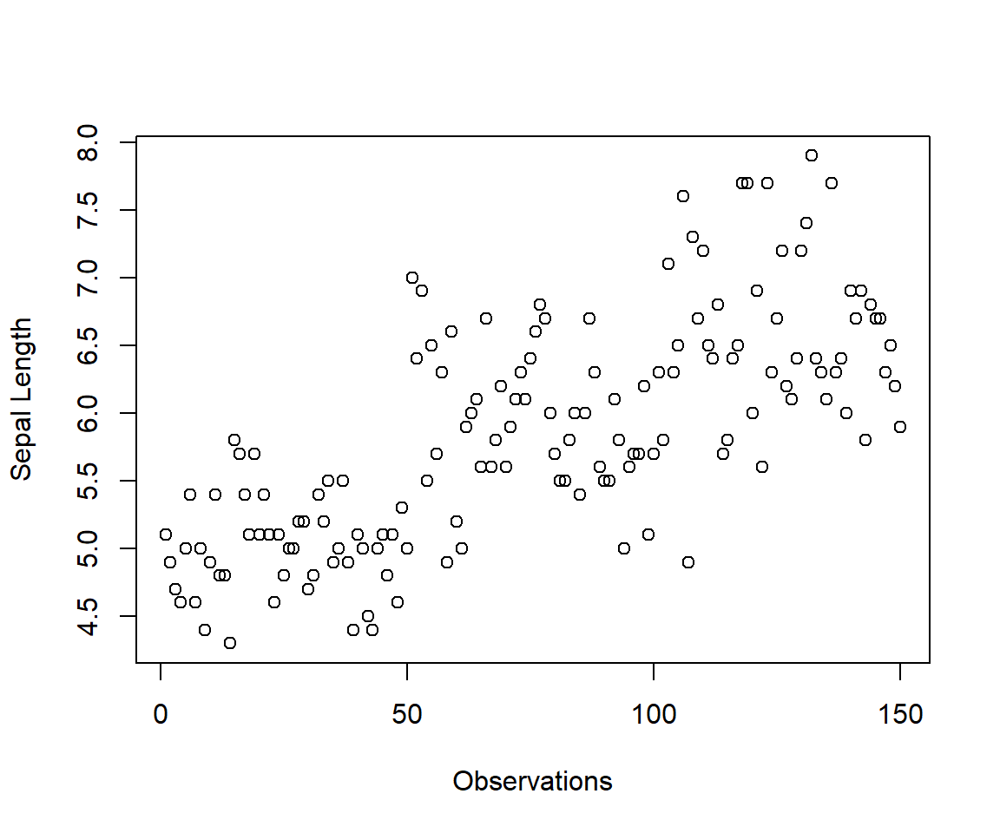
# range
max(iris$Sepal.Length) - min(iris$Sepal.Length)[1] 3.6Mean: The average value of a data set or sum of all observations divided by the number of observations.
Trimmed mean: The mean of a data set with a certain proportion of data not included. The highest and lowest values are trimmed, the 10% trimmed mean will use the middle 80% of your data.
mean(iris$Sepal.Length)[1] 5.843333mean(iris$Sepal.Length, trim = 0.10)[1] 5.808333summary(mean(iris$Sepal.Length, trim = 0.10)) Min. 1st Qu. Median Mean 3rd Qu. Max.
5.808 5.808 5.808 5.808 5.808 5.808 - Variance: A measure of the spread of your data.
var(iris$Sepal.Length)[1] 0.6856935- Standard Deviation (SD): The amount any observation can be expected to differ from the mean.
sd(iris$Sepal.Length)[1] 0.8280661Standard Error(SE): The error associated with a point estimate (e.g. the mean) of the sample.
Formula SE = SD / √n ; where n is number of observations
n.obs<-length(iris$Sepal.Length)
standarderror<-sd(iris$Sepal.Length)/sqrt(n.obs)
standarderror[1] 0.06761132- Median: estimate of the center of the data.
median(iris$Sepal.Length)[1] 5.8The n quantile is the value at which, for a given vector, n percent of the data is below that value.
Ranges from 0-1.
Quantile * 100 = percentile.
Quartiles are the 0.25, 0.5, and 0.75 quantiles
quantile(iris$Sepal.Length, c(0.25, 0.5, 0.75))25% 50% 75%
5.1 5.8 6.4 - Interquartile range: The middle 50% of the data, contained between the 0.25 and 0.75 quantiles
IQR(iris$Sepal.Length)[1] 1.3Correlation
Measure of how closely related two variables are
Pearson’s test assumes your data is normally distributed and measures linear correlation
Spearman’s test does not assume normality and measures non-linear correlation
Kendall’s test also does not assume normality and measures non-linear correlation, and is a more robust test - but it is harder to compute by hand
The following two functions:
cor() : computes the correlation coefficient
cor.test() : test for association/correlation between paired samples. It returns both the correlation coefficient and the significance level(or p-value) of the correlation.
Pearson’s
# Correlation between two numeric variable
# Default method: Pearson
cor(iris$Sepal.Length, iris$Sepal.Width, method = "pearson")[1] -0.1175698cor.test(iris$Sepal.Length, iris$Sepal.Width, method = "pearson")
Pearson's product-moment correlation
data: iris$Sepal.Length and iris$Sepal.Width
t = -1.4403, df = 148, p-value = 0.1519
alternative hypothesis: true correlation is not equal to 0
95 percent confidence interval:
-0.27269325 0.04351158
sample estimates:
cor
-0.1175698 cor.result<-cor.test(iris$Sepal.Length, iris$Sepal.Width, method = "pearson")Interpreting the output:
t is the t-test statistic value;
df is the degrees of freedom;
p-value is the significance level of the t-test;
conf.int is the confidence interval of the correlation coefficient at 95%;
sample estimates is the correlation coefficient(Cor.coeff)
# Extract the p.value
cor.result$p.value[1] 0.1518983# Extract the correlation coefficient
cor.result$estimate cor
-0.1175698 Spearman’s
# Spearman's correlation
cor.test(iris$Sepal.Length, iris$Sepal.Width, method = "spearman")Warning in cor.test.default(iris$Sepal.Length, iris$Sepal.Width, method =
"spearman"): Cannot compute exact p-value with ties
Spearman's rank correlation rho
data: iris$Sepal.Length and iris$Sepal.Width
S = 656283, p-value = 0.04137
alternative hypothesis: true rho is not equal to 0
sample estimates:
rho
-0.1667777 Kendall’s
# Kendall's correlation
cor.test(iris$Sepal.Length, iris$Sepal.Width, method = "kendall")
Kendall's rank correlation tau
data: iris$Sepal.Length and iris$Sepal.Width
z = -1.3318, p-value = 0.1829
alternative hypothesis: true tau is not equal to 0
sample estimates:
tau
-0.07699679 Regression
# lm(y~x)
model1<-lm(Sepal.Length~Petal.Length,data=iris)
summary(model1)
Call:
lm(formula = Sepal.Length ~ Petal.Length, data = iris)
Residuals:
Min 1Q Median 3Q Max
-1.24675 -0.29657 -0.01515 0.27676 1.00269
Coefficients:
Estimate Std. Error t value Pr(>|t|)
(Intercept) 4.30660 0.07839 54.94 <2e-16 ***
Petal.Length 0.40892 0.01889 21.65 <2e-16 ***
---
Signif. codes: 0 '***' 0.001 '**' 0.01 '*' 0.05 '.' 0.1 ' ' 1
Residual standard error: 0.4071 on 148 degrees of freedom
Multiple R-squared: 0.76, Adjusted R-squared: 0.7583
F-statistic: 468.6 on 1 and 148 DF, p-value: < 2.2e-16plot(model1)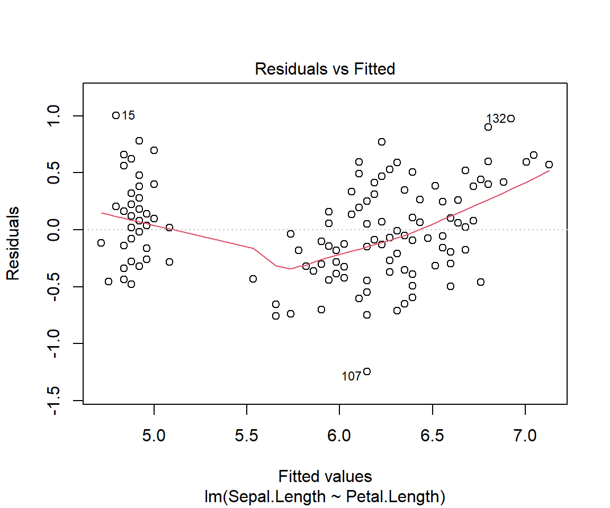
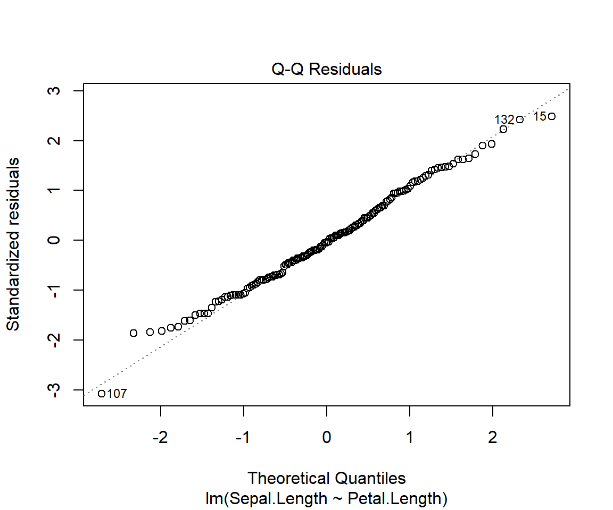
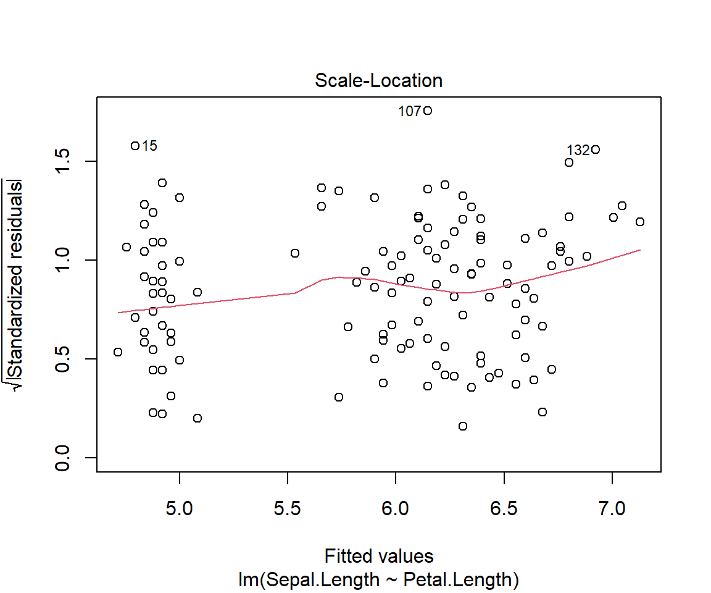
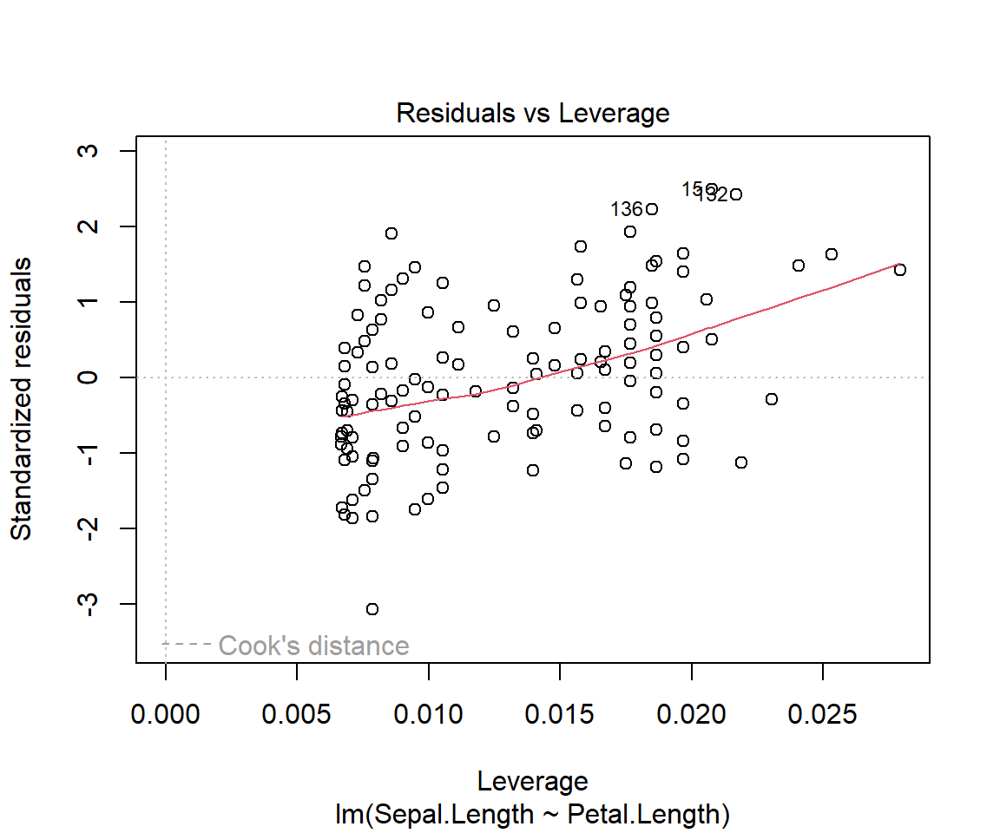
# Other useful functions
# model coefficients
coefficients(model1) (Intercept) Petal.Length
4.3066034 0.4089223 # CIs for model parameters
confint(model1, level=0.95) 2.5 % 97.5 %
(Intercept) 4.1516972 4.4615096
Petal.Length 0.3715907 0.4462539# residuals
residuals(model1) 1 2 3 4 5 6
0.22090540 0.02090540 -0.13820238 -0.31998683 0.12090540 0.39822871
7 8 9 10 11 12
-0.27909460 0.08001317 -0.47909460 -0.01998683 0.48001317 -0.16087906
13 14 15 16 17 18
-0.07909460 -0.45641792 1.00268985 0.78001317 0.56179762 0.22090540
19 20 21 22 23 24
0.69822871 0.18001317 0.39822871 0.18001317 -0.11552569 0.09822871
25 26 27 28 29 30
-0.28355574 0.03912094 0.03912094 0.28001317 0.32090540 -0.26087906
31 32 33 34 35 36
-0.16087906 0.48001317 0.28001317 0.62090540 -0.01998683 0.20268985
37 38 39 40 41 42
0.66179762 0.02090540 -0.43820238 0.18001317 0.16179762 -0.33820238
43 44 45 46 47 48
-0.43820238 0.03912094 0.01644426 -0.07909460 0.13912094 -0.27909460
49 50 51 52 53 54
0.38001317 0.12090540 0.77146188 0.25324634 0.58967743 -0.44229252
55 56 57 58 59 60
0.31235411 -0.44675366 0.07146188 -0.75604693 0.41235411 -0.70140030
61 62 63 64 65 66
-0.73783139 -0.12407698 0.05770748 -0.12853812 -0.17872361 0.59413856
67 68 69 70 71 72
-0.54675366 -0.18318475 0.05324634 -0.30140030 -0.36943035 0.15770748
73 74 75 76 77 78
-0.01032257 -0.12853812 0.33503079 0.49413856 0.53056965 0.34878520
79 80 81 82 83 84
-0.14675366 -0.03783139 -0.36050807 -0.31961584 -0.10140030 -0.39210703
85 86 87 88 89 90
-0.74675366 -0.14675366 0.47146188 0.19413856 -0.38318475 -0.44229252
91 92 93 94 95 96
-0.60586144 -0.08764589 -0.14229252 -0.65604693 -0.42407698 -0.32407698
97 98 99 100 101 102
-0.32407698 0.13503079 -0.43337025 -0.28318475 -0.46013708 -0.59210703
103 104 105 106 107 108
0.38075515 -0.29656817 -0.17835262 0.59450955 -1.24675366 0.41718624
109 110 111 112 113 114
0.02164738 0.39897069 0.10789297 -0.07389149 0.24432406 -0.65121480
115 116 117 118 119 120
-0.59210703 -0.07389149 -0.05567594 0.65361733 0.57183287 -0.35121480
121 122 123 124 125 126
0.26253960 -0.71032257 0.65361733 -0.01032257 0.06253960 0.43986292
127 128 129 130 131 132
-0.06943035 -0.21032257 -0.19656817 0.52164738 0.59897069 0.97629401
133 134 135 136 137 138
-0.19656817 -0.09210703 -0.49656817 0.89897069 -0.29656817 -0.15567594
139 140 141 142 143 144
-0.26943035 0.38521629 0.10343183 0.50789297 -0.59210703 0.08075515
145 146 147 148 149 150
0.06253960 0.26700074 -0.05121480 0.06700074 -0.31478371 -0.49210703 ## residuals
plot(residuals(model1)) 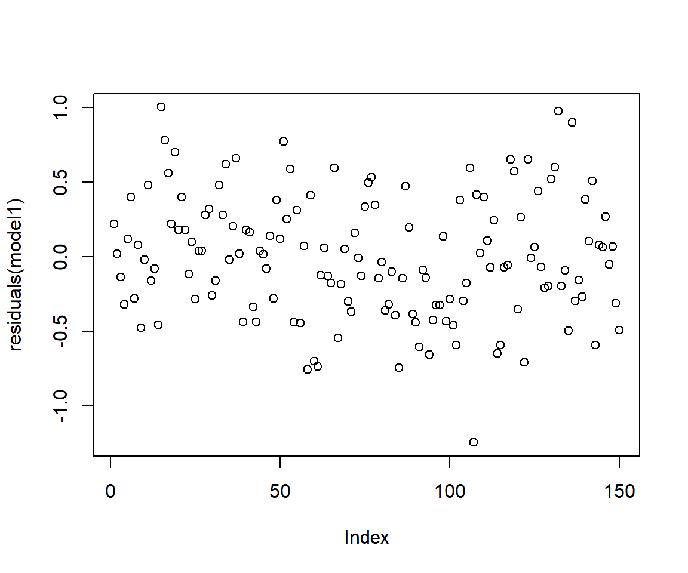
Interpretation of the linear regression output
Call function
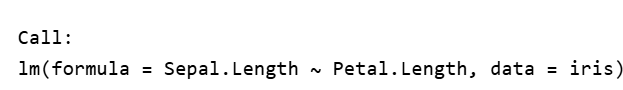
The call function describes the formula we are using for our linear regression model.In the example, we are using Petal.Length variable as the independent variable (x) and Sepal.Length as the dependent variable (y) from the iris dataset.
Residuals
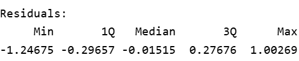
Remember that residuals are the difference between the observed values and predicted (or fitted) values of the dependent variable (y). In our example it would be similar to calculating iris$Sepal.Length - model1$fitted.values
For a good fit(and symmetrical residuals ) we want the median value to be centered around zero. In our example above the distribution looks symmetrical but might be slightly right skewed. So our model might not fit well when the Sepal length is longer. To check this look at the Quantile-Quantile plot (Q-Q plot) above, overall the residuals seem to have a good fit, but you can spot outliers at both ends.
Coefficeints
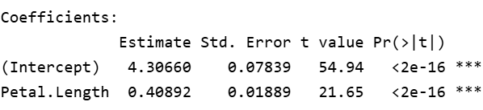
Estimate: The linear regression has the formula y=mx+c where y and x are the dependent and independent variables whereas m is the slope and c is the intercept at y.
The coefficients provide estimates for the intercept and the slope. So our equation can be written as y= 0.40892x + 4.3066, this means for each unit change in Petal Length(x), Sepal Length changes by a factor of 0.4, with addition of 4.3066.
Std. Error:
t value:
P value
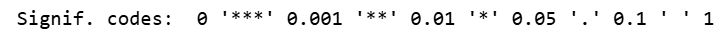
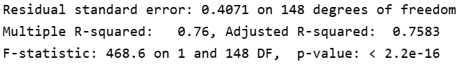
T-test
A method of comparing the means of two groups
# independent 2-group t-test
#t.test(y~x) # where y is numeric and x is a binary factor
# independent 2-group t-test
#t.test(yvar,xvar) # where y1 and y2 are numeric
# paired t-test
#t.test(yvar,xvar,paired=TRUE) # where yvar,xvar are numericYou can use the var.equal = TRUE option to specify equal variances and a pooled variance estimate.
You can use the alternative=“less” or alternative=“greater” option to specify a one tailed test.
dat.iris<-subset(iris, Species != "setosa")
t.test(dat.iris$Sepal.Length,dat.iris$Petal.Length)
Welch Two Sample t-test
data: dat.iris$Sepal.Length and dat.iris$Petal.Length
t = 12.808, df = 189.17, p-value < 2.2e-16
alternative hypothesis: true difference in means is not equal to 0
95 percent confidence interval:
1.147155 1.564845
sample estimates:
mean of x mean of y
6.262 4.906 dat.iris$Species <- factor(dat.iris$Species)
t.test(dat.iris$Sepal.Length~dat.iris$Species)
Welch Two Sample t-test
data: dat.iris$Sepal.Length by dat.iris$Species
t = -5.6292, df = 94.025, p-value = 1.866e-07
alternative hypothesis: true difference in means between group versicolor and group virginica is not equal to 0
95 percent confidence interval:
-0.8819731 -0.4220269
sample estimates:
mean in group versicolor mean in group virginica
5.936 6.588 t.test(Sepal.Length~Species, data=dat.iris)
Welch Two Sample t-test
data: Sepal.Length by Species
t = -5.6292, df = 94.025, p-value = 1.866e-07
alternative hypothesis: true difference in means between group versicolor and group virginica is not equal to 0
95 percent confidence interval:
-0.8819731 -0.4220269
sample estimates:
mean in group versicolor mean in group virginica
5.936 6.588